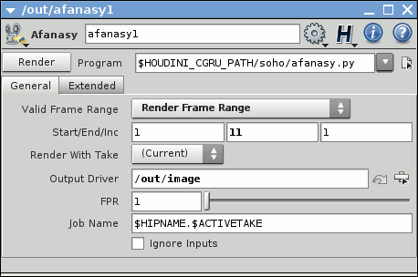
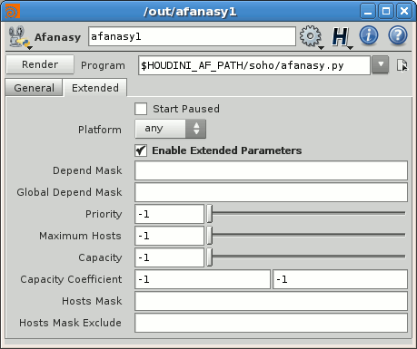
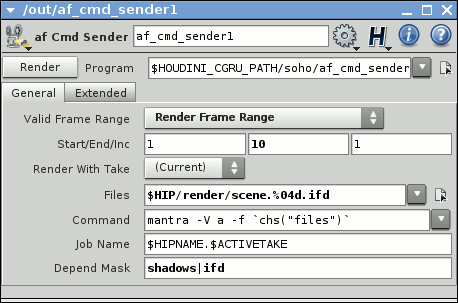
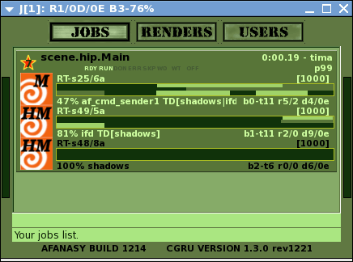

Afanasy in Houdini
Afanasy ROP
General parameters:

- Output Driver - path to another ROP to execute.
- FPR - 'Frames Per Renderer' - number of frames in each task.
- Job Name - afanasy job name (default is [scene name].[take name]).
- Ignore Inputs - not to execute 'Output Driver' input ROPs.
Extended parameters:

- Start Paused - Set job to 'Offline' state.
- Platform - OS type the job can launch tasks on: 'any' - any OS, 'Native' - the same as the script was launched on.
- Enable Extended Parameters - To 'switch on|off' it fast.
- Depend Mask - Same user jobs names pattern to wait to be done to start (empty value means not to wait any job).
- Global Depend Mask - Same as Depend Mask, but waits for a jobs from any user.
- Job Priority - Job order in user jobs list ('-1' means to keep this value default).
- Maximum Hosts - Maximum hosts job tasks can run on ('-1' means no limit - default value).
- Capacity - Tasks capacity value ('-1' means to keep this value default). Render must have enough free capacity to run it.
- Capacity Coefficient - Tasks capacity variation minimum and maximum coefficients. If at least one of it not '-1' block can variate capacity ('-1' and '0' values means no limit for maximum). Afanasy will change render command if there is enough free capacity on render. Works only with 'Mantra' ROP through changing command by specifying number of threads to use ('mantra -j').
- Hosts Mask - Hosts names pattern where job can run on (empty value means that job can run on host with any name).
- Hosts Mask Exclude - Hosts names pattern where job can not run on.
Extended parameters are the same for all CGRU Afanasy ROP nodes.
Cmd Sender
You can construct a command to render ifd or rib files and send it to afanasy.
Files parameter used only to help to construct a Command which has a menu with some templates to render with mantra and prman.
af_cmd_sender ROP:

- Job Name - Customize job name here.
- Depend Mask - Specify job depend mask (if needed). For af_multiply_sender it will be block or tasks depend mask (see below).
With this ROP you can send any array of numeric (with %04d) commands to afanasy to do anything (RenderMan and Mantra are just templates).
If command contains some service name that will be the block service (and its tasks output will be parsed with the service default parser).
Multiply Sender
af_multiply_sender constructs one multi-block job from several ROPs with various dependences between connected ROPs (job blocks).
Every connected block will depend on previous or if ROP has depend_mask parameter this will be used. This dependence can be per entire block or per task.
Previous ROP Valid Frame Range parameter describes dependence type and frame range to use:
- Render Any Frame: dependence will be per task, frame range from af_multiply_sender ROP will be used.
- Render Frame Range: dependence will be per task, this ROP frame range will be used.
- Render Frame Range Only (Strict): entire block dependence (all tasks must be done to continue to render other dependent ROPs). This ROP frame range will be used (of course).
To make independent block create depend_mask parameter on it and leave it empty.
af_multiply_sender ROP and its network:

af_multiply_sender will reverse connected inputs to construct job. Usually most depended ROP generates final result (image). So if it will be the first, it will run as soon as possible.
This is from CGRU examples:
$ cd cgru/examples/houdini
$ ./houdini scene.hip
Multiply blocks job example:

In this example 'mantra' commands waits shadows and 'ifd' files generation.
- The first af_cmd_sender1 block constructed from af_cmd_sender1 ROP. It renders by Mantra the sequence of 'ifd' files generated by ifd block (ROP). This block has tasks dependence. Its tasks waits shadows and ifd files generation (per task dependence).
- Second ifd block constructed from ifd ROP. It generates 'ifd' files for Mantra. This block has no dependence.
- Last block shadows constructed from shadows ROP. It generates shadows. This block has no dependence.